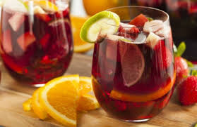
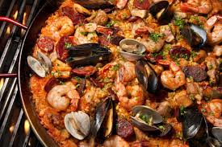
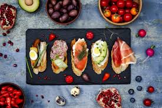

스페인 음식 문화의 특징
- 로마 음식문화의 영향
로마인들의 지배를 받을 때 로마인들이 즐겨 섭취한 마늘과 올리브가 스페인 음식문화에
중대한 영향을 끼쳤습니다. 스페인 모든 음식에 올리브유가 들어갑니다.
- 신대륙 발견의 영향
스페인에 감자, 토마토, 옥수수가 들어오게 되며 음식 문화가 풍요로워졌습니다.
- 아랍 음식 문화의 영향
아랍의 지배를 기점으로 쌀, 사프란, 후추, 사탕수수, 단과자, 감귤류가 들어왔습니다.
아랍 음식문화와 토착 음식 문화가 융합된 음식들이 많은데, 대표적인 음식으로는 빠에야가 있습니다.
스페인 대표 음식
- 포도주
스페인은 지중해성 기후와 비옥한 토양을 가져 포도를 재배하기 적합합니다.
이에 따라 스페인은 유럽의 대표 포도주 생산국 중 하나입니다.
스페인은 희석식 와인인 샹그리아를 즐겨 마십니다.
샹그리아는 적포도주, 탄산수, 설탕, 얼음, 오렌지, 레몬을 섞은 음료입니다.

- 빠에야
스페인식 해불 볶음밥으로 향신료인 샤프란이 들어갑니다.

- 타파스
여러 생선, 소시지, 샐러드, 치즈 등 다양한 재료들로 구성된 음식입니다.
한 입거리 음식으로 토핑에 따라 여러 종류들이 존재합니다.
